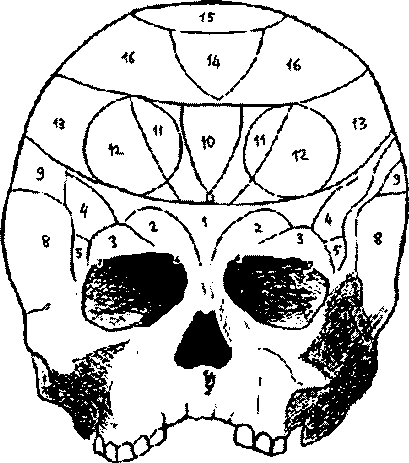

© WWW.MAXIMUMBILGI.COM

Araştırma Serisi No.13 Yüz Okuma Sanatı
¯¯¯¯¯¯¯¯¯¯¯¯¯¯¯¯¯¯¯¯¯¯¯¯¯¯¯¯¯¯¯¯¯¯ ¯¯¯¯¯¯¯¯¯¯¯¯¯¯¯¯¯¯¯¯¯¯¯¯¯¯¯¯¯¯¯¯¯¯
10
9. Eğitilme, ehlileştirilme
10. Mekan içgüdüsü
11. Yüz hafızası
12. Sözel hafıza
13. Benzerliği hızlı algılama yeteneği
14. Metafizik akıl